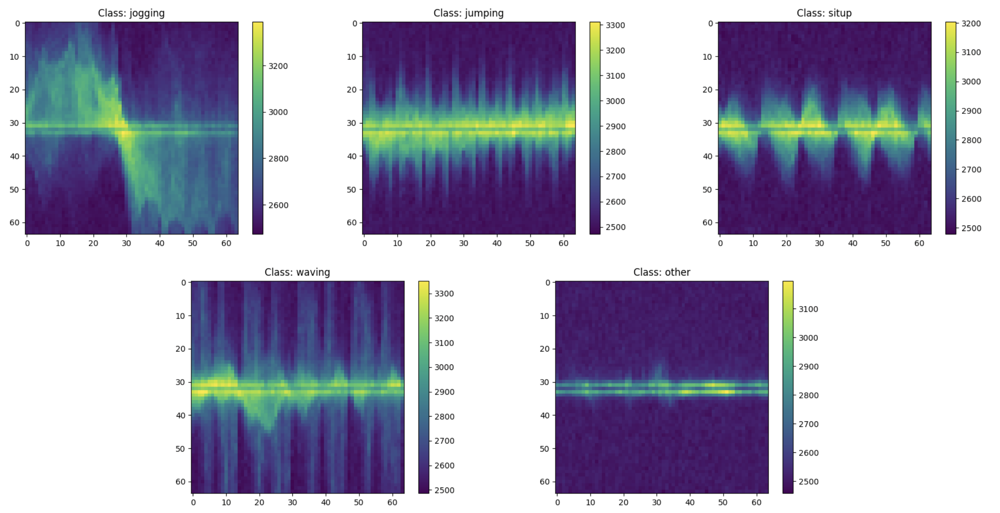

Ternarizing CNNs
Overview
This project focuses on compressing a CNN model for human activity recognition using ternarization and quantization techniques. The aim is to significantly reduce model size and computational complexity without sacrificing much accuracy. The baseline model, trained on 64×64 spectrograms derived from radar signals, is ternarized and quantized to allow deployment with integer-only inference on resource-constrained embedded platforms.
Dataset
The model is trained on a private dataset, using spectrogram representations of radar
signals, each sized 64×64×1. These spectrograms capture temporal-frequency
features of radar reflections and are well-suited for classifying fine-grained human
activities. The dataset includes 5 distinct activity classes -
{jogging, jumping, situp, waving, other}, and training was performed using
5-fold cross-validation to ensure robust generalization. The spectrograms look like:

Model Architecture
The CNN architecture is lightweight, consisting of:
- A 2D convolution layer
- Two depthwise separable convolutions for spatial-temporal filtering
- Fully connected output layer with 5 class logits

The model had 3029 parameters in total and was designed with efficiency in mind, enabling rapid inference while maintaining high classification accuracy.
Ternarization and Quantization
Quantization is the process of reducing the precision of numbers in a model, such as weights, biases and activations, by representing them with fewer bits. This helps make machine learning models smaller, faster, and more efficient for deployment on devices with limited resources. Ternarization uses 2 bits to represent each weight, restricting values to three discrete levels.
The weight ternarization step maps full-precision weights to one of three values:
{−1, 0, +1}. To ensure the ternary weight networks perform well, it is required to
minimize the Euclidian distance between the full precision weights W and the
ternary-valued weights W' while including a non-negative scaling factor α. Ternarization
reduces the model size by over 16× and enables efficient bitwise operations. A
threshold-based approach was used to determine which weights are quantized to -1, 0 and
1. In addition, the activations and biases were quantized to 8-bit and 23-bit
respectively. Quantization was done using uniform affine mapping with a learned scale and
zero-point, allowing real values to be approximated as
q = round(r/scale) + zero_point. The images below illustrate the
floating-point weights and biases on the left, and their ternarized and quantized
counterparts on the right.


The model was trained using Quantization-Aware Training (QAT). Unlike post-training
quantization, QAT simulates quantization effects during training itself, enabling the
network to learn robust representations under low-bit constraints. During training, fake
quantization modules simulate low-bit precision, while the actual parameters remain in
float for gradient updates. The Straight-Through Estimator (STE) was used to approximate
gradients through the non-differentiable torch.round quantization function.

To optimize further for inference, pruning was done to achieve ~45% sparsity and batch normalization layers were folded into the preceding convolutional layers, combining their parameters with the conv weights and biases. This reduced runtime complexity without changing model behavior.
Finally, all operations, including convolutions, batch norm, activation, and pooling,
were implemented using integer-only arithmetic. Dyadic scaling factors of the form
(s = a ⁄ 2ᵇ), where a and b are integers, were used for efficient scaling via
bit-shifts instead of division, allowing deployment on fixed-point hardware with no
floating-point support. This full quantization pipeline enabled robust, low-latency
inference with minimal accuracy degradation compared to the full-precision baseline.

Results
| Fold | FP32 Accuracy (%) | Ternarized Accuracy (%) |
|---|---|---|
| 1 | 99.27 | 98.19 |
| 2 | 100.00 | 99.64 |
| 3 | 99.27 | 98.91 |
| 4 | 98.55 | 97.83 |
| 5 | 100.00 | 100.00 |
| Avg | 99.42 | 98.91 |
Despite ~45% sparsity and ternarized weights, the accuracy remained close to baseline, validating the effectiveness of ternarization and quantization for embedded HAR systems.